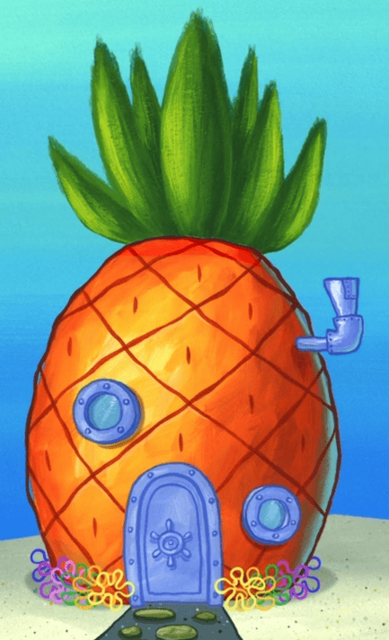

This is my project 1 website. Here you can find links to my resume as well as an about me section that talks about my hobbies and stuff. I need this page to be longer so I guess I will talk about pineapples, because I like pineapples.
The pineapple is a spiky yellow house that a sponge lives in. But did you you it is also an edible fruit?
Pineapple contains an enzyme (Bromelain?) that digests protein. It can be used as meat tenderizer in certain dishes. Therefore, when you eat a raw unprocessed pineapple, it is actually also eating you back (Newtowns 3rd law?).
To prevent this, soak your pineapple in salt water before consuming.